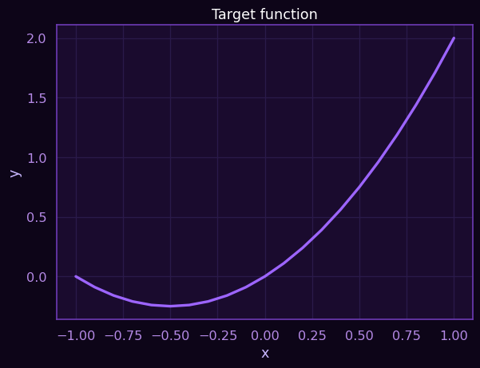
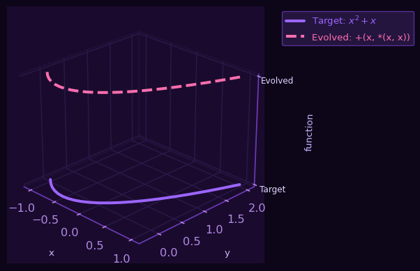
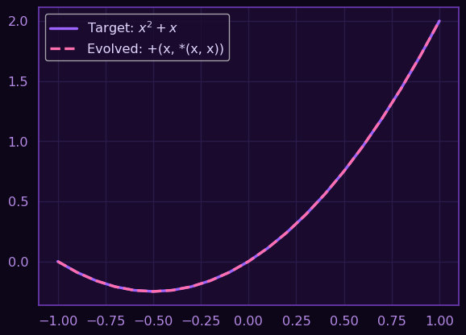

Genetic programming is a strategy for creating programs that solve a specific problem using operations as the chromosomes and the full set of operations as the individuals.
The demo using DEAP
Here are the requirements for our program, which mainly are DEEAP, matplotlib and numpy.
Here the modules are imported
import operator
import random
from deap import algorithms, base, creator, tools, gp
import numpy as np
import matplotlib.pyplot as plt
from matplotlib import rcParams
import seaborn as sns
# Setting matplotlib pyplot style to dark
#plt.style.use('deepseek_lovdog_plasma')
# Set the dark purplish Plasma theme
sns.set_theme(
style="darkgrid", # Dark background with grid
context="notebook",
font="sans-serif",
font_scale=1.1,
rc={
# Core colors
'axes.facecolor': '#1a0b2e', # Deep purple background
'figure.facecolor': '#0d0518', # Even darker figure bg
'grid.color': '#2a1a4a', # Grid lines
'axes.edgecolor': '#6d3bb5', # Axis spines
'xtick.color': '#b58ae6', # Tick colors
'ytick.color': '#b58ae6',
# Text
'text.color': '#e0d6ff', # Off-white text
'axes.labelcolor': '#c9b8ff',
'axes.titlecolor': '#ffffff',
# Lines
'lines.color': '#9d65ff', # Vibrant purple
'lines.linewidth': 2.5,
# Color cycle (custom Plasma-like palette)
'axes.prop_cycle': plt.cycler('color', [
'#9d65ff', # Purple
'#ff6eae', # Pink
'#6eff87', # Mint
'#ffb86c', # Orange
'#6cebff' # Cyan
])
}
)
# Optional: Improve font rendering
rcParams['font.family'] = 'sans-serif'
rcParams['font.sans-serif'] = ['Arial', 'DejaVu Sans', 'Helvetica']Target Function and error evaluation function
\[\begin{equation}f(x) = x^2 + x\end{equation}\]
# 1. Define the target function we want to approximate (e.g., x^2 + x)
# And error function
def target_func(x):
return x**2 + x
# 2. Define evaluation (mean squared error)
def evaluate(individual):
func = gp.compile(individual, pset)
points = [x/10.0 for x in range(-10, 11)] # Test points from -1 to 1
error = sum((func(x) - target_func(x))**2 for x in points)
return error,
x = [i/10.0 for i in range(-10, 11)]
plt.plot(x, [target_func(xi) for xi in x])
# legend and stuff
plt.xlabel("x")
plt.ylabel("y")
plt.title("Target function")
plt.show()
Hyperparameters
In this part the primitives are created with add and multiplication operations with a unique variable.
# 3. Create primitive set (building blocks)
pset = gp.PrimitiveSet("MAIN", arity=1) # 1 input variable (x)
pset.addPrimitive(operator.add, 2, name="add") # Addition
pset.addPrimitive(operator.mul, 2, name="mul") # Multiplication
pset.addTerminal(1) # Constant 1
pset.renameArguments(ARG0="x") # Rename input to 'x'Population options, minimum fitness and individual type
Procedure definitions
# 6. Initialize toolbox
toolbox = base.Toolbox()
toolbox.register("expr", gp.genHalfAndHalf, pset=pset, min_=1, max_=3)
toolbox.register("individual", tools.initIterate, creator.Individual, toolbox.expr)
toolbox.register("population", tools.initRepeat, list, toolbox.individual)
toolbox.register("evaluate", evaluate)
toolbox.register("select", tools.selTournament, tournsize=3)
toolbox.register("mate", gp.cxOnePoint)
toolbox.register("mutate", gp.mutUniform, expr=toolbox.expr, pset=pset)Running the evolution simulation
# 7. Run evolution
population = toolbox.population(n=50)
hof = tools.HallOfFame(1)
stats = tools.Statistics(lambda ind: ind.fitness.values)
stats.register("avg", np.mean)
stats.register("min", np.min)
result, log = algorithms.eaSimple(
population, toolbox, cxpb=0.7, mutpb=0.2, ngen=10,
stats=stats, halloffame=hof, verbose=True
)gen nevals avg min
0 50 66.1902 0
1 44 21.5728 0
2 32 10.658 0
3 37 20.9675 0
4 37 9.59615 0
5 38 9.84502 0
6 35 10.2587 0
7 38 14.2212 0
8 38 10.7227 0
9 40 14.8701 0
10 34 11.3278 0 Results of the program
# 8. Results
best_expr = str(hof[0]) # String representation of the best tree
print(f"\nBest expression: {best_expr}")
# Convert to readable math
readable_expr = best_expr.replace("add", "+").replace("mul", "*")
print(f"Human-readable: {readable_expr}")
# Plot results
y_true = [target_func(xi) for xi in x]
y_pred = [gp.compile(hof[0], pset)(xi) for xi in x]
## Interactive 3D plot separating target and evolved Function in Z axis
fig = plt.figure()
fig2 = plt.figure()
ax = fig.add_subplot(111, projection='3d')
# Plot functions
ax.plot(x, y_true, zs=0, zdir='z',
color='#9d65ff', linewidth=3, label="Target: $x^2 + x$")
ax.plot(x, y_pred, '--', zs=1, zdir='z',
color='#ff6eae', linewidth=3, label=f"Evolved: {readable_expr}")
# Axis labels (smaller font, better padding)
ax.set_xlabel("x", labelpad=12, fontsize=10, color='#c9b8ff')
ax.set_ylabel("y", labelpad=12, fontsize=10, color='#c9b8ff')
ax.set_zlabel("function", labelpad=12, fontsize=10, color='#c9b8ff')
# Z-axis ticks (customized)
ax.set_zticks([0, 1])
ax.set_zticklabels(["Target", "Evolved"], fontsize=9, color='#e0d6ff')
# Legend (moved outside plot)
ax.legend(
loc='upper left',
bbox_to_anchor=(1.05, 1), # Outside right
facecolor='#2a1a4a',
edgecolor='#6d3bb5',
fontsize=10,
labelcolor='linecolor' # Matches line colors
)
# Viewing angle and grid
ax.view_init(elev=25, azim=-45) # Better perspective
ax.grid(color='#2a1a4a', alpha=0.3, linewidth=0.5)
# Customize panes (transparent with colored edges)
ax.xaxis.pane.fill = False
ax.yaxis.pane.fill = False
ax.zaxis.pane.fill = False
ax.xaxis.pane.set_edgecolor('#2a1a4a')
ax.yaxis.pane.set_edgecolor('#2a1a4a')
ax.zaxis.pane.set_edgecolor('#2a1a4a')
#ax = fig.add_subplot(111, projection='3d')
#
#ax.plot(x, y_true, zs=0, zdir='z', label="Target: $x^2 + x$")
#ax.plot(x, y_pred, '--', zs=1, zdir='z', label=f"Evolved: {readable_expr}")
#ax.set_xlabel("x")
#ax.set_ylabel("y")
#ax.set_zlabel("function")
### Set ticks in z [ Target, Evolved ]
#ax.set_zticks([0, 1])
#ax.set_zticklabels(["Target", "Evolved"])
#ax.legend()
## 2d plot
ax2 = fig2.add_subplot(111)
ax2.plot(x, y_true, label="Target: $x^2 + x$")
ax2.plot(x, y_pred, "--", label=f"Evolved: {readable_expr}")
ax2.legend()
plt.show()
Best expression: add(x, mul(x, x))
Human-readable: +(x, *(x, x))
